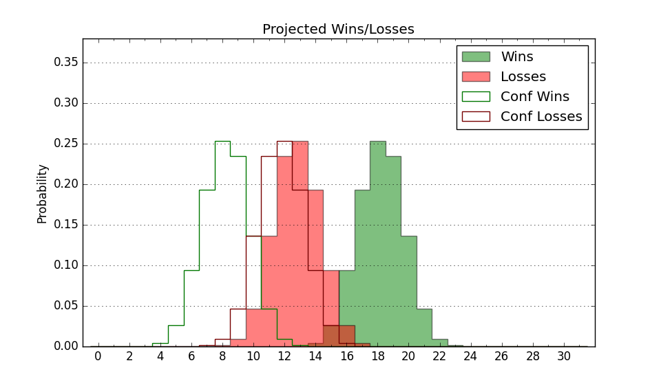

| Home | Game Probabilities | Conferences | Preseason Predictions | Odds Charts | NCAA Tournament |
| City: | University Park, Pennsylvania | |
| Conference: | Big Ten (17th)
| |
| Record: | 6-14 (Conf) 16-15 (Overall) | |
| Ratings: | Comp.: 15.4 (61st) Net: 15.4 (61st) Off: 114.9 (60th) Def: 99.5 (68th) SoR: 0.3 (84th) |
| Remaining | ||||||
|---|---|---|---|---|---|---|
| Date | Opponent | Win Prob | Pred. | |||
| Previous | Game Score | |||||
| Date | Opponent | Win Prob | Result | Off | Def | Net |
| 11/4 | Binghamton (311) | 97.4% | W 108-66 | 21.2 | 0.7 | 22.0 |
| 11/8 | UMBC (305) | 97.1% | W 103-54 | -2.5 | 28.0 | 25.5 |
| 11/12 | St. Francis PA (312) | 97.4% | W 92-62 | -13.9 | 9.8 | -4.1 |
| 11/15 | (N) Virginia Tech (151) | 80.6% | W 86-64 | 0.1 | 11.5 | 11.6 |
| 11/20 | Fort Wayne (161) | 89.3% | W 102-89 | 20.1 | -21.7 | -1.6 |
| 11/25 | (N) Fordham (236) | 89.9% | W 85-66 | -0.4 | 3.3 | 2.9 |
| 11/26 | (N) Clemson (26) | 28.8% | L 67-75 | -10.6 | 4.6 | -6.0 |
| 12/1 | Buffalo (347) | 98.4% | W 87-64 | -1.6 | -8.2 | -9.8 |
| 12/5 | Purdue (15) | 36.3% | W 81-70 | 6.7 | 19.5 | 26.2 |
| 12/10 | @Rutgers (75) | 41.9% | L 76-80 | -2.4 | 1.7 | -0.7 |
| 12/14 | Coppin St. (361) | 99.3% | W 99-51 | 1.2 | 10.4 | 11.7 |
| 12/21 | @Drexel (193) | 76.7% | W 75-64 | 6.5 | -2.3 | 4.2 |
| 12/29 | Penn (307) | 97.1% | W 86-66 | -9.9 | -1.3 | -11.1 |
| 1/2 | Northwestern (53) | 59.9% | W 84-80 | 8.9 | -9.9 | -0.9 |
| 1/5 | Indiana (58) | 62.0% | L 71-77 | -6.0 | -8.8 | -14.9 |
| 1/8 | @Illinois (14) | 14.2% | L 52-91 | -35.2 | 6.8 | -28.4 |
| 1/12 | Oregon (32) | 48.3% | L 81-82 | 7.2 | -10.9 | -3.7 |
| 1/15 | @Michigan St. (13) | 13.5% | L 85-90 | 21.7 | -4.0 | 17.7 |
| 1/20 | Rutgers (75) | 71.1% | W 80-72 | 0.3 | -3.7 | -3.4 |
| 1/24 | @Iowa (59) | 34.2% | L 75-76 | -1.6 | 3.1 | 1.5 |
| 1/27 | @Michigan (25) | 18.0% | L 72-76 | 2.8 | 2.1 | 4.9 |
| 1/30 | Ohio St. (36) | 49.2% | L 64-83 | -11.5 | -10.9 | -22.4 |
| 2/4 | Minnesota (96) | 79.0% | L 61-69 | -18.9 | -20.1 | -39.1 |
| 2/8 | @UCLA (27) | 18.8% | L 54-78 | -16.1 | -7.1 | -23.2 |
| 2/11 | @USC (66) | 37.4% | L 67-92 | -7.9 | -21.7 | -29.6 |
| 2/15 | Washington (108) | 82.4% | L 73-75 | -11.9 | -8.9 | -20.8 |
| 2/19 | Nebraska (56) | 61.7% | W 89-72 | 23.7 | 2.4 | 26.1 |
| 2/22 | @Minnesota (96) | 52.5% | W 69-60 | 0.9 | 11.8 | 12.8 |
| 2/26 | @Indiana (58) | 32.3% | L 78-83 | 11.6 | -12.6 | -1.0 |
| 3/1 | Maryland (11) | 31.7% | L 64-68 | -13.1 | 12.2 | -0.9 |
| 3/8 | @Wisconsin (16) | 14.7% | W 86-75 | 17.9 | 16.6 | 34.5 |
| Stats & Trends | |||||
|---|---|---|---|---|---|
| Current | Day | Week | Month | Season | |
| Composite | 15.4 | -- | -- | -- | +4.4 |
| Comp Rank | 61 | -- | -- | -- | +17 |
| Net Efficiency | 15.4 | -- | -- | -- | -- |
| Net Rank | 61 | -- | -- | -- | -- |
| Off Efficiency | 114.9 | -- | -- | -- | -- |
| Off Rank | 60 | -- | -- | -- | -- |
| Def Efficiency | 99.5 | -- | -- | -- | -- |
| Def Rank | 68 | -- | -- | -- | -- |
| SoS Rank | 67 | -- | -- | -- | -- |
| Exp. Wins | 16.0 | -- | -- | -- | -0.1 |
| Exp. Conf Wins | 6.0 | -- | -- | -- | -1.6 |
| Conf Champ Prob | 0.0 | -- | -- | -- | -1.0 |

| Advanced Stats | ||
|---|---|---|
| Stat | Value | Rank |
| Off Eff FG % | 0.563 | 36 |
| Off Ast Ratio | 0.177 | 35 |
| Off ORB% | 0.283 | 201 |
| Off TO Rate | 0.146 | 167 |
| Off FT Ratio | 0.432 | 15 |
| Def Eff FG % | 0.491 | 110 |
| Def Ast Ratio | 0.158 | 282 |
| Def ORB% | 0.275 | 130 |
| Def TO Rate | 0.182 | 23 |
| Def FT Ratio | 0.278 | 65 |